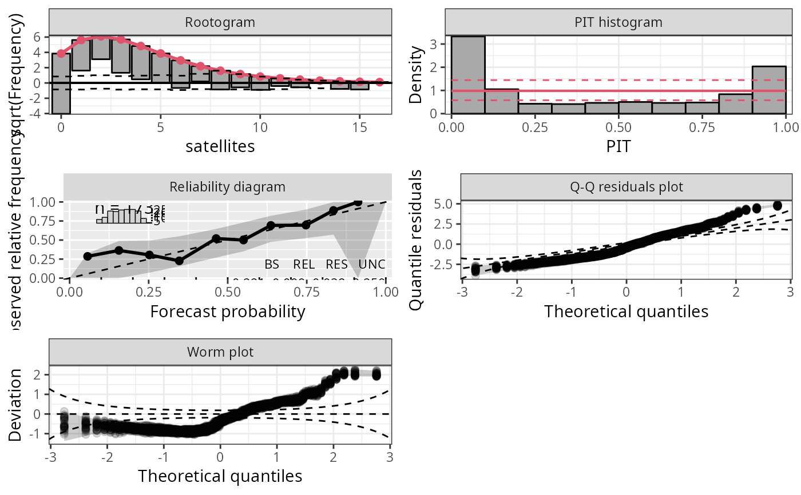

Plotting Graphical Evaluation Tools for Probabilistic Models
topmodels.RdA quick overview plot with panels for all graphical evaluation methods provided
for probabilistic (regression) model objects. If plot = TRUE, the
resulting objects are plotted by plot or autoplot
before they are returned within a single list, depending on whether the package
ggplot2 is loaded.
topmodels(
object,
plot = TRUE,
class = NULL,
newdata = NULL,
na.action = na.pass,
which = NULL,
ask = dev.interactive(),
spar = TRUE,
single_page = NULL,
envir = parent.frame(),
...
)Arguments
- object
An object supported by
"procast".- plot
Should the
plotorautoplotmethod be called to draw all chosen plots? Either setplotexpicitly to"base"vs."ggplot2"to choose the type of plot, or for a logicalplotargument it's chosen conditional if the packageggplot2is loaded.- class
Should the invisible return value be either a
data.frameor atibble. Either setclassexpicitly to"data.frame"vs."tibble", or forNULLit's chosen automatically conditional if the packagetibbleis loaded.- newdata
optionally, a data frame in which to look for variables with which to predict. If omitted, the original observations are used.
- na.action
function determining what should be done with missing values in
newdata. The default is to employNA.- which
Character or integer, selects the type of plot:
"rootogram"graphically compares (square roots) of empirical frequencies with fitted frequencies from a probability model,"pithist"compares empirical probabilities from fitted models with a uniform distribution,"reliagram"shows a reliability diagram for assessing the reliability of a fitted probabilistic distributional forecast,"qqrplot"shows a quantile-quantile plot of quantile residuals, and"wormplot"shows a worm plot using quantile resiudals.- ask
For multiple plots, the user is asked to show the next plot. Argument is ignored for
ggplot2style graphics.- spar
Should graphical parameters be set? Will be ignored for
ggplot2style graphics.- single_page
Logical. Should all plots be shown on a single page? Only choice for
ggplot2style graphics.- envir
environment, default is
parent.frame()- ...
Arguments to be passed to
rootogram,pithist,reliagram,qqrplot, andwormplot.
Value
A list containing the objects plotted conditional on the arguemnt which.
Examples
data("CrabSatellites", package = "countreg")
CrabSatellites2 <- CrabSatellites[CrabSatellites$satellites <= 1, ]
m1 <- glm(satellites ~ width + color, data = CrabSatellites, family = poisson)
m2 <- glm(satellites ~ width + color, data = CrabSatellites2, family = binomial)
## ggplot2 graphics
topmodels(m1, single_page = TRUE, nsim = 30, plot = "ggplot2")

topmodels(m2, single_page = TRUE, nsim = 30, plot = "ggplot2")